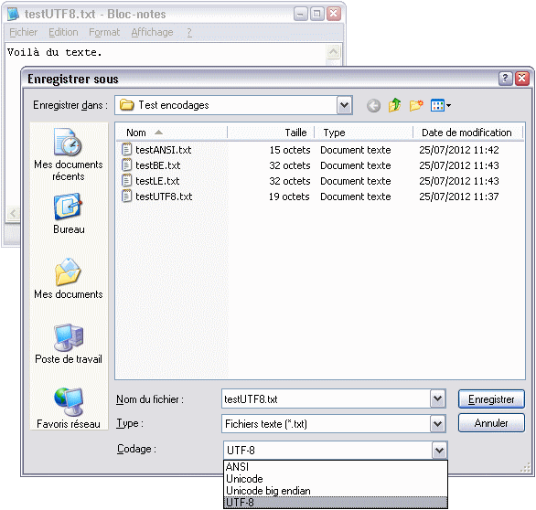

Aux détours de vos aventures informatiques, vous entendez parler de charset, d’encodage, d’ASCII, d’UTF-8, d’ISO-8859, de latin-1… et vous demandez ce que sont ces drôles de bestioles ?
Ce cours vous est destiné. Tout y sera expliqué depuis le début et après l’avoir lu, promis, vous ne serez plus jamais embêtés par ce genre de désagréments.
Autant vous le dire tout de suite : tout ce qui sera dit dans ce cours tournera autour d’une même problématique : la façon dont on stocke du texte dans un ordinateur.
Comme vous le savez peut-être, un ordinateur ne peut stocker que des nombres, ou plus précisément des 0 et des 1 (des « bits ») qu’on regroupe pour former des nombres en binaire. Pour plus d’informations sur le binaire et la représentation en mémoire des nombres, je vous invite à consulter ce tutoriel. Comment fait-on alors pour écrire du texte ? La réponse est toute bête : on associe à chaque caractère (une lettre, un signe de ponctuation, une espace…) un nombre. Un texte est alors une suite de ces nombres, on parle de chaîne de caractères.
Par exemple, on peut décider ceci :
Caractère
A
B
C
…
Z
0
1
2
…
9
.
,
:
?
!
espace
Nombre associé
0
1
2
…
25
26
27
28
…
35
36
37
38
39
40
41
Avec cet exemple fictif, le texte « SALUT LES ZEROS ! » donnerait ceci en mémoire :
S A L U T L E S Z E R O S !
18 00 11 20 19 41 11 04 18 41 25 04 17 14 18 41 40
Comme vous le voyez, on a donné un nombre unique pour chaque lettre de l’alphabet (de A à Z), pour les dix chiffres (de 0 à 9) et pour les signes de ponctuation, sans oublier l’espace.
Cet exemple nous montre comment les informaticiens inventent une façon de coder un texte en mémoire. Premièrement, on décide de l’ensemble des caractères dont on a besoin, et on assigne à chacun un identifiant numérique unique appelé code. Cet ensemble est appelé jeu de caractères codés (en anglais charset, abréviation de character set) et peut se résumer dans un tableau de correspondance comme ci-dessus. Ensuite, il faut déterminer l’encodage (encoding), c’est-à-dire la façon de transcrire un texte grâce aux codes des caractères qui le composent, selon un jeu de caractères donné. Le moyen le plus simple est d’écrire directement chaque code (auquel cas on parle de page de code — charmap) ; le jeu et l’encodage sont alors confondus. On a procédé de cette façon dans l’exemple ci-dessus, mais ce n’est pas toujours satisfaisant. C’est pourquoi il faut bien retenir la différence entre jeu de caractères et encodage.
Ça, c’est pour la théorie. Maintenant, place à la pratique ! L’exemple que je vous ai proposé était simple. Trop simple. La réalité est tout autre pour deux raisons principales :
Il y a bien plus de caractères à gérer.
Il y a des caractères particuliers, dits « de contrôle », qui ne servent pas pour un symbole « imprimable » mais donnent des indications aux programmes qui manipulent les chaînes de caractères. Le plus important est le caractère « fin de chaîne » qui sert à indiquer où s’arrête la chaîne (sinon, le programme n’aurait pas de moyen de le savoir et continuerait à lire ce qui se trouve après, ce qui nous vaudrait de belles erreurs).
De plus, il y a aussi les lettres minuscules, que je n’ai pas mis dans mon exemple. Il faudrait aussi pouvoir gérer les accents, les symboles de monnaie… voire, soyons fous, penser aux langues non latines (les Arabes et les Chinois ayant peut-être envie de parler leur langue). C’est là que ça devient vraiment problématique, comme nous allons le voir.
Il faut aussi considérer les contraintes matérielles. En effet, comme je vous l’ai dit, un ordinateur ne connaît que le binaire. Les bits sont regroupés par groupes de 8 appelés « octets ». Un octet ne peut stocker que les nombres entiers de 0 à 255 (soit 256 = 28 possibilités, pour les matheux). Si cela ne suffit pas, on peut rassembler les octets par 2, 4 ou plus pour avoir de plus grands nombres. Dans nos encodages, il faudra tenir compte de ces limites, c’est-à-dire s'arranger pour que les codes de notre jeu tiennent tous sur un ou deux octets par exemple.
Pour bien cerner les problèmes causés par les encodages et la situation actuelle, le mieux reste encore de retracer leur histoire. En avant !
Au commencement était l’ASCII
Le premier encodage historique est l’ASCII, soit l’American Standard Code for Information Interchange (en français, le code américain normalisé pour l’échange d'informations). C’est une norme américaine, inventée en 1961, qui avait pour but d'organiser le bazar informatique à l’échelle nationale. Ce n’est pas le premier encodage utilisé mais on peut oublier les précédents.
Le terme « ASCII » est employé de manière incorrecte par beaucoup de monde sans savoir ce qu’il désigne réellement.
Le jeu de caractères ASCII utilise 7 bits (et non 8 !) et dispose donc de 128 (27) caractères uniquement, numérotés de 0 à 127. En effet, il est paru à une époque où des regroupements par 7 au lieu de 8 étaient encore assez fréquents. Sans plus attendre, voici la table de l’ASCII :
0
1
2
3
4
5
6
7
8
9
A
B
C
D
E
F
00
NUL
SOH
STX
ETX
EOT
ENQ
ACK
BEL
BS
HT
LF
VT
FF
CR
SO
SI
10
DLE
DC1
DC2
DC3
DC4
NAK
SYN
ETB
CAN
EM
SUB
ESC
FS
GS
RS
US
20
SP
!
"
#
$
%
&
'
(
)
*
+
,
-
.
/
30
0
1
2
3
4
5
6
7
8
9
:
;
<
=
>
?
40
@
A
B
C
D
E
F
G
H
I
J
K
L
M
N
O
50
P
Q
R
S
T
U
V
W
X
Y
Z
[
\
]
^
_
60
`
a
b
c
d
e
f
g
h
i
j
k
l
m
n
o
70
p
q
r
s
t
u
v
w
x
y
z
{
|
}
~
DEL
Hé, mais j’y comprends rien à ton tableau, moi !
Chaque case correspond à l’un des 128 caractères de l’ASCII rangés dans l'ordre. Pour retrouver le code associé à un caractère, il faut regarder l’en-tête de sa ligne et celui de sa colonne ; il contiennent des valeurs en hexadécimal (si vous ne connaissez pas l’hexadécimal, allez voir cette partie de tutoriel) qu’il faut additionner. Ainsi le caractère Z a pour code hexadécimal 0x50+0xA = 0x5A (soit 90 en décimal).
Regardons un peu ce qu’il y a dans l’ASCII :
les 26 lettres de l’alphabet latin, en majuscules (0x41 — 0x5A) et en minuscules (0x61 — 0x7A), ainsi que les chiffres de 0 à 9 ;
divers signes de ponctuation, et d’autres symboles tels que les crochets, les accolades, l'arrobase… ;
des « caractères blancs », c'est-à-dire l’espace mais aussi d’autres tels que le retour à la ligne (eh oui, c’est aussi un caractère). Ils sont marqués comme ça, en voici la liste :
SP (0x20) : espace (space) ;
HT (0x09) : tabulation horizontale (horizontal tab), le ' ' des programmeurs ;
VT (0x0B) : tabulation verticale (vertical tab) ;
LF (0x0A) : nouvelle ligne (line feed), le ' ' des programmeurs ;
CR (0x0D) : retour chariot (carriage return), le ' ' des programmeurs ; marque la fin d’une ligne ;
FF (0x0C) : nouvelle page (form feed) ;
Notez que LF et CR remplissent des rôles très proches. Sous Windows on utilise une combinaison des deux (CR LF) à la fin de chaque ligne ; sous Linux et Mac OS X, on ne se sert que de LF ; enfin, sous Mac avant Mac OS X, on ne se servait que de CR. Un joyeux bazar !
des caractères de contrôle non imprimables (0x00 — 0x1F, et 0x7F), marqués comme ça ; en voici quelques-uns :
NUL (0x00) : caractère nul (null), le '\0' des programmeurs ; c’est le caractère servant à marquer la fin d’une chaîne de caractères ;
des caractères servant à la communication entre programmes, périphériques ou machines ;
des caractères correspondant à des actions, comme BS (backspace, retour arrière), ESC (escape, échappement) ou CAN (cancel, annulation) ;
d’autres encore.
Un exemple ? Tout d’suite m’dame !
Citation : Texte à encoder
Et l'ASCII survint.
texte : E t l ' A S C I I s u r v i n t .
valeur en ASCII : 45 74 20 6C 27 41 53 43 49 49 20 73 75 72 76 69 6E 74 2E
Les valeurs sont en hexadécimal.
Les 128 caractères de l’ASCII n’ont pas été placés au hasard. Leurs codes ont été soigneusement étudiés. Ci-dessous, quelques exemples pour votre culture.
À l’époque reculée où a été conçu l’ASCII, on communiquait encore parfois des données à l’ordinateur via des cartes perforées. Chaque emplacement codait un bit : 1 s’il y avait un trou, 0 sinon. La perforation était irréversible. Lorsqu'on n’avait pas encore spécifié de caractère particulier, on laissait tous les emplacements intacts et le caractère valait donc 0 (tous les bits à 0). Ce caractère « non spécifié » se retrouve en ASCII avec NUL, le caractère nul, qui vaut 0. De même, lorsqu’on voulait effacer un caractère on perçait tous les emplacements, ce qui donnait 127 (tous les bits à 1) ; le caractère ASCII DEL (delete) correspond justement à cette suppression.
Les lettres majuscules sont séparées de leurs homologues minuscules par un intervalle de 32. Cela signifie qu’il suffit de modifier un bit (le 6e) pour passer des unes aux autres, ce qui simplifie les traitements.
Comme vous voyez, l’ASCII est simple. Il ne comporte que le strict nécessaire pour l'époque, pour utiliser un ordinateur… en anglais. Que les 26 lettres de l’alphabet latin de base, pas d’accents, etc. Vous vous en doutez certainement, les autres pays ont voulu pouvoir utiliser leur propre langage correctement.
La révolte gronde
C'est pourquoi des extensions de l’ASCII sont apparues. Certaines gardent la base ASCII et utilisent le 8e bit laissé libre afin d'avoir plus de caractères à disposition (deux fois plus, 256 = 28 au total). Ainsi, les codes de 0 à 127 correspondent encore aux caractères ASCII, tandis que les codes supérieurs (de 128 à 255, c’est-à-dire ceux avec le 8e bit valant 1) servent pour les nouveaux caractères. D’autres restent sur 7 bits, et modifient carrément les 128 caractères de l’ASCII pour leur propres besoins.
Vous imaginez la pagaille monstrueuse que ça a été, lorsque chaque pays ou groupe linguistique s’est mis à éditer sa propre page de code. Ça fonctionnait bien tant que les documents ne quittaient pas la zone où leur propre encodage était en usage, mais les échanges internationaux étaient sujets à problèmes. Comme un même code signifiait des caractères différents d’un jeu à l'autre, le récepteur ne lisait pas la même chose que le destinateur. Par exemple, le symbole du dollar ($) aux États-Unis devenait celui de la livre (£) au Royaume-Uni : dégâts assurés !
Il y a bien eu des tentatives de stopper la multiplication des pages de code, mais globalement elles ont été insuffisantes. En 1972, la norme ISO 646 a défini une page de code sur 7 bits dérivant de l’ASCII, avec des caractères fixes (principalement les lettres majuscules et minuscules, les chiffres et la ponctuation principale), les autres caractères étant laissés au choix. Cette norme, qui devait permettre une certaine compatibilité et un semblant d’ordre, a donné naissance à un certain nombre de pages de code nationales, mais elle n’était pas adaptée aux langues autres que latines et ne permettait pas de représenter assez de caractères.
ISO 8859 : 8 bits pour les langues latines
Plus tard, une norme mieux pensée a fait son apparition : la norme ISO 8859. Cette fois, elle utilise 8 bits donc 256 caractères au maximum. Le standard ISO 8859 comporte en fait plusieurs « parties », c’est-à-dire des pages de code indépendantes, nommées ISO 8859-n où n est le numéro de la partie. ISO 8859 a été pensée afin que les parties soient le plus largement compatibles entre elles. Ainsi, elle englobe l’ASCII (codes 0 à 127) comme base commune, et les codes 128 à 255 devaient accueillir les caractères propres à chaque page de code, en s'arrangeant pour que des caractères identiques ou proches d’une page à l’autre occupent le même code.
Ce standard a principalement servi aux langues latines d’Europe pour mettre au point une page de code commune. À elles seules, elles utilisent finalement 10 parties d’ISO 8859, parfois appelées latin-1, latin-2, etc. ; ces parties correspondent à des évolutions dans la page de code latine de base (latin-1, ou officiellement ISO 8859-1) afin de rajouter certains caractères pour compléter des langues. En voici deux que vous devriez connaître :
ISO 8859-1 (latin-1 ou « Occidental ») est un encodage très courant dans les pays latins et sur la toile. C’est en effet celui qu’utilisent Linux et de nombreux documents et pages web. Les systèmes Windows utilisent également un jeu proche, comme on le verra bientôt. Il a l’avantage de permettre d’écrire grosso modo toutes les langues latines, et ceci avec des caractères d’un octet seulement.
ISO 8859-15 (latin-9 ou « Occidental (euro) »), datant de 1998, introduit le signe de l’euro (€) et complète le support de quelques langues dont le français (avec Œ) en abandonnant des symboles peu utilisés (dont le mystérieux ¤ signifiant « monnaie »). Il est néanmoins peu utilisé par rapport à son grand frère ci-dessus.
0
1
2
3
4
5
6
7
8
9
A
B
C
D
E
F
00
⋮
70
ASCII (sauf les caractères de contrôle, non utilisés)
À nouveau un exemple, avec cette fois des caractères accentués et autres (oui, je suis poète) :
Citation : Texte à encoder
« Ô âme oubliée ! »
texte : « ▒ Ô â m e o u b l i é e ▒ ! ▒ »
valeur en latin-1 : AB A0 D4 20 E2 6D 65 20 6F 75 62 6C 69 E9 65 A0 21 A0 BB
Notez l’emploi d’espaces insécables (symbolisés par ▒ pour qu’on les voit) avant le point d’exclamation et entre les guillemets, conformément aux règles typographiques. :)
Les codes de 0x00 à 0x1F et 0x7F (les caractères de contrôle ASCII) et de 0x80 à 0x9F sont laissés inutilisés par le standard ISO 8859. Pour les communications Internet, l’IANA a créé la norme ISO-8859 (attention, c'est le tiret qui change tout !). Celle-ci reprend toute la norme ISO 8859 et y rajoute des caractères de contrôle aux emplacements libres.
Windows s’est aussi basé sur latin-1 pour mettre au point son nouveau jeu de caractères occidental dans les années 1990. Windows-1252 (ou CP1252, parfois dit ANSI à titre officieux) est maintenant le jeu utilisé dans les systèmes Windows occidentaux (donc probablement chez vous), et remplace les anciennes pages de code (la page de code 437 pour les États-Unis, et la 850 pour l’Europe). Il reprend tous les caractères d’ISO 8859-1 et utilise les codes libres (de 0x80 à 0x9F) pour des caractères supplémentaires.
ISO 8859 a aussi été utilisé pour l’alphabet cyrillique (ISO 8859-5), l’arabe (ISO 8859-6), le grec (7) l’hébreu (8) et même le thaï (11).
Il existe au total 16 parties et il n’y en aura pas plus. En effet, on privilégie désormais le développement de l’Unicode.
ISO 2022 : du multi-octet pour les langues asiatiques
Pendant ce temps-là, en Asie…
Les langues latines s’en sont plutôt bien sorties finalement. Elles ont réussi à ne pas dépasser la limite fatidique de l’octet, ce qui restait quand même le plus pratique pour les traitements (et la consommation mémoire). Mais les langues asiatiques comme le japonais, le coréen ou le chinois disposent de bien trop de caractères pour que tout tienne sur 8 bits. Les encodages mis au point en Asie de l'Est ont donc franchi le saut du multi-octet. Certains utilisaient 2 octets, ce qui permet 65 536 (216) codes différents.
Comme pour les langues latines, un standard a été mis au point pour les organiser, on l’appelle ISO 2022. C’est un concept un peu spécial. Il permet de jongler entre plusieurs pages de code à l’aide de « séquences d’échappement » codées sur 3 octets (parfois 4) et commençant par le caractère ASCII ESC (0x1B) ; celles-ci indiquent aux programmes quelle page de code il faut utiliser pour interpréter ce qui suit. Les différentes pages de codes sont totalement indépendantes et peuvent utiliser un octet ou deux par caractère.
ISO 2022 a été utilisé pour le chinois (ISO 2022-CN), le coréen (ISO 2022-KR) et le japonais (ISO 2022-JP). Ces encodages, surtout le japonais, restent encore très répandus même si l’Unicode se développe.
Avec des normes comme ISO 8859 ou ISO 2022, on commençait à s’en tirer pas trop mal. Les problèmes sont atténués, mais subsistent (et si vous rédigez un document en français mais voulez y insérer de l’arabe ?). Finalement, des illuminés se sont dit : « Et si on créait un jeu de caractères unique pour tout le monde ? » De cette idée toute simple sont nés deux monuments : le standard ISO 10646 et Unicode.
Le Jeu universel de caractères
ISO 10646 voit le jour en 1990. Il s’agit du Jeu universel de caractères ou JUC (en anglais, UCS pour Universal Character Set). Celui-ci a été pensé pour pouvoir accueillir n’importe quel caractère existant de n’importe quelle langue du monde. Un travail titanesque ! Concrètement, c’est un bête jeu de caractères, sauf que celui-ci offre pas moins de 221 = 2 097 152 codes ! À l’origine, il allait même jusqu’à 232 = 4 294 967 296, mais il a rapidement été restreint : c’est déjà bien suffisant.
Actuellement, environ 17% des codes sont déjà attribués à des caractères. Comme vous le voyez, il nous reste encore de la place à revendre. Et pourtant, dans ces 17%, on a tout mis ou presque : les caractères de tous les anciens jeux, tous les alphabets modernes, pléthore de symboles… Le JUC n’est peut-être pas la solution définitive et éternelle (en informatique, il ne faut jamais dire « jamais »), mais il s’en rapproche suffisamment pour qu’on dorme sur nos deux oreilles pendant le siècle à venir. :)
Devant une telle quantité, les polices d’écriture (qui n’ont rien à voir avec les encodages, il s’agit ici d’affichage des caractères et non de leur codage en mémoire) peinent à suivre. C’est ce qui explique les petits symboles du type
que vous pouvez voir avec un peu de chance sur certaines pages (si vous regardez bien, vous constaterez que dans le carré est inscrit le code hexadécimal du caractère). ;) Généralement, les auteurs de polices se contentent de créer les glyphes des parties qui les intéressent (et éventuellement recopient les glyphes de référence pour le reste) ; si vous avez vraiment besoin de rédiger une partition suivant la notation musicale grecque ancienne avec le JUC, vous utiliserez une police spécialisée.
Bon à savoir : par commodité et souci de compatibilité, le JUC reprend ISO-8859-1 (latin-1 avec les caractères de contrôle) pour ses 256 premiers caractères (donc inclut également l’ASCII). Ce jeu n’est pas définitif : de nombreux caractères sont régulièrement créés et assignés à des codes encore libres. Rassurez-vous, les caractères déjà en place ne bougent plus.
logo d’Unicode
logo d’Unicode
Unicode
Unicode est une norme développée par le Consortium Unicode publiée pour la première fois en 1991 (en 2011, elle en est à la version 6.1). On peut la voir comme une surcouche (une extension) d’ISO 10646. En fait, les deux normes sont développées parallèlement et synchronisées en permanence. Là où ISO 10646 liste simplement les caractères du jeu et leur assigne un nom et un code, Unicode va plus loin en leur ajoutant des attributs et en décrivant des relations entre eux (donc en leur donnant un sens). C’est un peu complexe et pas forcément intéressant ici, donc je ne m’étendrai pas dessus.
Unicode, c’est cependant plus que cela. Ce standard décrit également des algorithmes de traitement, notamment pour la gestion des différents sens d’écriture, et surtout, ce qui nous intéresse ici, des encodages permettant de transcrire le JUC.
Un jeu, des encodages
Des encodages ? Mais, euh… Je croyais qu’Unicode était un encodage ?
Unicode est basiquement un jeu de caractères (un ensemble de caractères auxquels on attribue à chacun un point de code unique) et non un encodage (façon de représenter ce point de code en mémoire). C’est ici que la distinction prend tout son sens. Auparavant, les deux se confondaient puisque tous les jeux de caractères étaient associés à un encodage simple : vu que leur codes tenaient sur un ou deux octets, on se contentait de les écrire tels quels en mémoire.
Or, les points de codes d’Unicode nécessitent beaucoup plus qu’un octet : il leur en faudrait quatre ! Cela voudrait dire que si l’on continuait à faire comme avant, on utiliserait 4 fois plus de mémoire qu’avec nos jeux précédents tenant sur un octet, comme ISO 8859.
Des petits malins me diront que trois octets suffiraient car on aurait alors 3×8=24 bits disponibles ; c’est vrai maintenant que le jeu a été réduit à 221 codes, mais en informatique, pour des raisons techniques, on préfère des tailles multiples de 2.
Ce serait un gaspillage de mémoire trop important, d’autant plus qu’il paraîtrait inutile. En effet, il y aurait plein d’octets qui vaudraient zéro :
Codes
Encodage selon UTF-32
Caractères disponibles dans cet intervalle
jusqu’à U+00FF (28-1)
00000000 00000000 00000000 bbbbbbbb
langues occidentales (latin-1)
jusqu’à U+FFFF (216-1)
00000000 00000000 bbbbbbbb bbbbbbbb
la plupart des alphabets actuellement utilisés dans le monde
jusqu’à U+10FFFF (221-1)
00000000 000bbbbb bbbbbbbb bbbbbbbb
n’importe quel caractère
Vous le voyez, il y aurait toujours au moins un octet nul. Le cas extrême est celui d’un Occidental qui gaspille 3 octets par caractère.
UTF-16
Pour faire des économies, on a donc mis au point des encodages plus futés. Tout d’abord, il y a l’UTF-16 (UCS transformation format, 16 bits). Celui-ci code les 216 = 65 536 premiers caractères sur 2 octets, et les codes supérieurs sont représentés sur 4 octets par le biais d’une petite transformation mathématique. Le 16 dans son nom indique le nombre minimal de bits nécessaires pour un caractère. Les caractères de cet encodage ne font donc pas tous la même taille, ce qui complique un poil les traitements (même s’il est facile de distinguer un caractère sur 2 octets d’un caractère sur 4).
De plus, on a une difficulté technique supplémentaire pour l’UTF-16 (et l’UTF-32) : le boutisme (endianness). Ce terme mystique désigne l’ordre dans lequel sont « rangés » les octets d’un nombre multi-octet. Il en existe deux sortes principales : le gros boutisme (big-endian, BE) et le petit boutisme (little-endian, LE). Le problème, c’est que le boutisme dépend des machines et que ces deux-là sont très répandus. Or en UTF-16 on lit les données par groupes de 2 octets, donc le boutisme influe sur le résultat : si l’on lit du texte UTF-16 envoyé par quelqu’un utilisant un boutisme différent du sien, c’est l’erreur assurée ! Pour pallier à cela, on utilise parfois un caractère spécial appelé BOM (byte order mask, marque d’ordonnancement des octets). l’IANA a aussi autorisé deux déclinaisons de l’encodage pour les communications Internet qui permettent de préciser le boutisme employé : UTF-16BE et UTF-16LE.
Reprenons le texte d’exemple de tout à l’heure et encodons-le cette fois en UTF-16 :
Remarquez que ce texte en UTF-16 s’encode exactement comme en latin-1, avec des valeurs sur 2 octets au lieu d’un (donc un octet sur deux valant 0). On occupe donc deux fois plus de mémoire.
UTF-8
On a aussi inventé l’UTF-8. La taille des caractères codés est encore plus variable, et l’économie de mémoire plus grande. Comme vous l’avez deviné, le nombre minimal de bits est 8. En fait, il représente les premiers caractères (ceux de l’ASCII) sur un octet, les suivants sur 2 octets, 3 et jusqu’à 4 octets.
En plus, cet encodage est compatible avec l’ASCII : les caractères sont codés exactement de la même manière en UTF-8 et en ASCII. Ajoutez à cela que l’encodage a été conçu afin que certains algorithmes de traitement (comparaison de texte par exemple) soient réutilisables sans modification. Ainsi, de vieux programmes qui n’ont pas été conçus pour un autre encodage que l’ASCII fonctionneront aussi si on leur passe du texte en UTF-8 : magique ! Enfin, contrairement à l’UTF-16, on n’a pas de problème de boutisme puisqu’on lit les données octet par octet. :)
Bref, UTF-8 a de nombreux avantages (économie de mémoire, compatibilité, boutisme, résistance aux erreurs…). Un défaut aussi : la grande variabilité de taille des caractères qui rend les traitements plus compliqués et moins performants. Il n’empêche que ses point forts lui ont assuré un grand succès : il est sans doute l’encodage le plus répandu aujourd’hui. Il est utilisé pour les documents et les communications, et les systèmes d’exploitation (Mac et GNU/Linux) s’y mettent aussi.
Pour ne pas changer, exemple de texte en UTF-8 :
Citation : Texte à encoder
« Ô âme oubliée ! »
texte : «____ ▒____ Ô____ â____ m e o u b l i é____ e ▒____ ! ▒____ »____
valeur en UTF-8 : C2-AB C2-A0 C3-94 20 C3-A2 6D 65 20 6F 75 62 6C 69 C3-A9 65 C2-A0 21 C2-A0 C2-BB
Constat flagrant, la consommation de mémoire est singulièrement réduite par rapport à UTF-16. :D On voit de plus que les caractères de base sont codés exactement comme en ASCII, et les caractères supérieurs s’étendent sur plusieurs octets (ici symbolisés par « __ »). Ici, vu qu’on reste dans les caractères latins, ça ne dépasse jamais deux octets, mais ça peut aller jusqu’à 4.
Hop, notre périple au fil des âges, sur la piste des encodages, nous a ramené au temps présent ! ASCII, ISO 8859, UTF-8… Il est grand temps de dresser le bilan. Que retenir de tout ça ?
Le principe du stockage de texte en informatique : jeux de caractères et encodages (bien retenir la distinction).
Qu’un caractère n’est pas un octet. Ni même un nombre fixe d’octets. Programmeurs, fourrez-vous ça dans le crâne et tenez-le vous pour dit.
Les principaux encodages : ASCII, ISO 8859-1, UTF-8, pour n’en donner que trois.
Leurs usages actuels.
Les encodages actuels
On va tout de suite détailler le dernier point !
Avant l’apparition d’Unicode, les systèmes d’exploitation fonctionnaient avec un système de pages de code régionales, c’est-à-dire qu’on utilisait des variantes d’encodage sur 8 bits en fonction du pays. Depuis, ils ont migré vers Unicode en interne (y compris Windows, depuis XP, même si ça ne se répercute par forcément pour l’utilisateur).
Sous Windows, UTF-16 (little endian) est maintenant utilisé en interne et UTF-8 est également supporté, mais par compatibilité Unicode cohabite avec les pages de code. Ces dernières, incorrectement appelées « ANSI » et proches des ISO 8859, sont encore fréquemment utilisées. Je vous rappelle que celle pour nous autres occidentaux (Europe de l’Ouest et Amérique du Nord) est Windows-1252 (« CP1252 ») et dérive de latin-1. Celles-ci ont remplacé les anciennes pages de code dites « OEM » (CP437 et CP850 pour l’Occident), dont l’usage demeure toutefois pour la console.
Sous Mac OS, l’encodage en vigueur en Occident était nommé MacRoman, mais depuis Mac OS X on utilise UTF-8.
Les distributions GNU/Linux utilisaient latin-1 par défaut. Certaines l’utilisent toujours, tandis que les autres adoptent progressivement UTF-8 (maintenant majoritaire).
Il est bien sûr possible, avec les bons outils, d’encoder un fichier de n’importe quelle façon, sous n’importe quel système d’exploitation. L’encodage utilisé par un OS est celui utilisé par défaut dans le fonctionnement des programmes. Les outils intégrés à un OS (la console de Windows, par exemple) ou fournis avec auront donc une préférence pour cet encodage. Cela influe donc sur l’encodage des documents (puisqu’un utilisateur de base ne s’en souciera pas).
De plus, UTF-8 est devenu l’un des encodages les plus utilisés sur la Toile (pour les pages Web), ce qui semble logique puisqu’il s’agit d’un réseau international mettant en contact toutes les langues. L’autre principal encodage sur Internet reste latin-1.
Comme vous voyez, l’ASCII seul n’est plus employé, mais tous les encodages répandus conservent la base ASCII par compatibilité. Les trois principaux, cités ci-dessus, se basent même tous sur latin-1 (même si l’UTF-8 n’est pas compatible avec ce dernier puisqu’un codet de 8 bits sera encodé sur 2 octets).
Détection de l’encodage
Un problème posé par la diversité des encodages existants est la détermination de l’encodage utilisé par un fichier. Les renseignements associés à un fichier particulier (sa date de création par exemple) n’indiquent rien sur son encodage. On doit donc tenter de le « deviner », au moyen d’algorithmes compliqués qui analysent le contenu du fichier. Ces algorithmes sont efficaces la plupart du temps, mais peuvent échouer, et sont compliqués. C’est ce qui explique les affichages bizarres de certains fichiers ou pages web : le programme n’a pas réussi à déterminer le bon encodage.
Un moyen plus simple serait d’inclure cette indication directement dans le contenu du fichier, au tout début (afin de diminuer les risques de perturbation). On utilise pour cela le fait que tous les encodages actuels soient compatibles avec l’ASCII. C’est ce qu’on verra tout à l’heure pour les pages HTML.
Vous n’êtes pas lassé de toutes ces connaissances à ingurgiter ? Rassurez-vous, on va s’arrêter là pour pratiquer un peu. :) Il est important de savoir tout ça, mais c’est encore mieux de savoir le mettre à profit !
Manipuler des documents
Lorsqu’on consulte un document, que ce soit un fichier texte (code source par exemple) ou une page web, il faut la lire avec le bon encodage. Sinon, les valeurs seront mal interprétées. Exemple ?
Voici un texte encodé en UTF-8 :
Citation : Texte encodé en UTF-8
Bonjour, amis Zéros !
Si vous le lisez en latin-1, vous obtiendrez ceci :
Citation : Texte encodé en UTF-8 mais interprété comme du latin-1
Le problème se pose même si tous les caractères font la même taille dans les deux encodages, une même valeur pouvant désigner deux caractères différents d’un encodage à l’autre.
Consulter une page web (avec un navigateur)
La plupart du temps, vous n’aurez pas à vous soucier de l’encodage pour lire une page web. Normalement, celui-ci est en effet précisé dans le code source. Il arrive toutefois que ce ne soit pas fait, ou mal fait, et que votre navigateur (Internet Explorer, Firefox…) échoue à le deviner. Par exemple : Exemple de page web lue (avec Firefox) avec un mauvais encodage − exemple bien sûr simulé ! C’est moche. C’est désagréable à lire. Heureusement, vous pouvez y remédier manuellement. Tout navigateur qui se respecte offre un menu permettant de jongler entre les encodages. Vous devriez trouver sans trop de difficultés. Pour Firefox par exemple, il est caché dans le menu « Affichage » : Menu des encodages dans Firefox Pour l’instant, par défaut, le navigateur est en « détection automatique », ce qui a conduit à l’utilisation incorrecte d’ISO-8859-1 (latin-1). On peut en changer. Ici, la page est probablement en UTF-8 (ça ressemble à l’erreur qu’on a vue en introduction), donc on essaie cet encodage. On choisit l’option correspondante dans le menu, et… Tadaam ! La page s’affiche correctement. Vous avez fait du beau boulot. :)
Exemple de page web lue (avec Firefox) avec un mauvais encodage − exemple bien sûr simulé !Menu des encodages dans FirefoxTadaam !
Travailler sur un fichier (avec un éditeur de texte)
On va maintenant voir comment gérer l’encodage de nos fichiers. Tout éditeur de texte qui mérite d’être appelé ainsi nous permet de le faire de façon précise. Commençons par un cas d’école : le Bloc-Notes de Windows. Si vous êtes sous Windows, ouvrez le Bloc-Notes, tapez un peu de texte avec des accents, puis enregistrez. Boîte de dialogue d’enregistrement du Bloc-Notes, avec choix de l’encodage Comme vous voyez, le Bloc-Notes permet au premier enregistrement de choisir l’encodage du fichier. Le choix est assez limité cependant : « ANSI » (Windows-1252, l’encodage par défaut sous Windows, je vous le rappelle), « Unicode » et « Unicode big endian » (qui désignent en fait l’UTF-16 avec les deux boutismes possibles), ou UTF-8. Comme exercice, vous pouvez vous amuser à vérifier que les tailles des fichiers affichées sur ma capture sont correctes, sachant que mon texte comporte 15 caractères et que le Bloc-Notes rajoute automatiquement une BOM pour tous les encodages Unicode (qui fait 2 octets en UTF-16 et 3 octets en UTF-8).
Boîte de dialogue d’enregistrement du Bloc-Notes, avec choix de l’encodage
Le Bloc-Notes est vraiment un éditeur très basique, et ses fonctionnalités sont limitées. Ainsi on ne peut pas choisir le latin-1 par exemple. De plus, rien n’indique l’encodage du fichier sur lequel on travaille, et on ne peut pas en changer après coup.
Si vous faites de la programmation ou autre, vous utilisez certainement un éditeur plus avancé (je l’espère pour vous). Comme les navigateurs web, la plupart incluent un menu pour passer d’un encodage à un autre. Toujours sous Windows, voici l’exemple de Notepad++ (ici j’ai rouvert les fichiers que je viens de créer avec le Bloc-Notes) : Le menu des encodages dans Notepad++ Déjà, première remarque, Notepad++ détecte automatiquement l’encodage du fichier ouvert et l’indique dans la barre de statut (en bas, encadré en bleu). C’est tout de suite mieux. :) Au passage, remarquez la mention « Dos\Windows » à gauche de cette indication. Elle indique le style utilisé pour les fins de ligne. Souvenez-vous, on avait vu qu’il existait plusieurs façon de coder une fin de ligne, selon les OS. Cette mention indique que notre fichier utilise le style Windows, c’est-à-dire CR LF. Ensuite, comme vous voyez, le menu « Encodage » permet de changer en direct l’encodage utilisé. les options « Encoder en xxx » ont le même effet que pour les navigateurs web (elles changent l’interprétation des octets déjà existants) ; elles influent en plus sur l’écriture (l’encodage des nouveaux caractères qu’on écrit). Pour modifier l’encodage d’un fichier, il ne faut pas cliquer sur « Encoder en xxx », car cela ne convertit pas le contenu existant pour l’adapter au nouvel encodage. Pour ça, il faut faire « Convertir en xxx ». ;) Enfin, vous constatez qu’on a quand même un choix d’encodages plus vaste que dans le Bloc-Notes !
Le menu des encodages dans Notepad++
Après cet aperçu, faites un tour dans la configuration de votre éditeur. Il y a certainement des options qui nous intéressent. Fenêtre de configuration de Notepad++ (paramètres relatifs à l’encodage) Ici, j’ai encadré la partie intéressante en vert. Je peux choisir l’encodage qui sera utilisé par défaut lors de la création d’un nouveau fichier (ainsi que le format des fins de ligne, ce dont je vous parlais tout à l’heure).
Fenêtre de configuration de Notepad++ (paramètres relatifs à l’encodage)
Avec ou sans BOM ?
Remarquez qu’il y a deux encodages UTF-8. o_O L’une porte la mention « (sans BOM) », ce qui signifie que l’autre est un « UTF-8 avec BOM ». Si vous vous rappelez bien, la BOM est un caractère Unicode spécial qui permet d’indiquer le boutisme d’un fichier. Elle se place au tout début de ce fichier. Cette technique est utilisée pour l’UTF-16 (et l’UTF-32). En revanche, elle est inutile en UTF-8 puisqu’on n’a pas de problème de boutisme. Pire, elle peut rendre des fichiers invalides lorsqu’ils sont lus par certains programmes. C’est par exemple le cas des pages web, comme on verra plus tard. Pourtant, certains éditeurs dont le fameux Bloc-Notes la rajoutent automatiquement même en UTF-8, car ça les aide à détecter l’encodage du fichier. C’est une pratique déconseillée. Dans votre éditeur favori, choisissez toujours la version sans BOM si vous avez le choix.
Ici, je vais nettoyer mon fichier de cette hérésie avec Notepad++. Pour ça, je fais simplement « Convertir en UTF-8 (sans BOM) » et j’enregistre. Dans les paramètres de mon éditeur (cf. ci-dessus), je choisis aussi l’UTF-8 sans BOM par défaut.
Écrire des documents (HTML, LaTeX, etc.)
Lorsque vous codez certains documents destinés à être lus et interprétés par un programme (page web HTML, document LaTeX…), il vous faut en plus préciser à ce programme l’encodage du fichier.
HTML (pages web) et XML
Pour les pages HTML, il existe un champ dans l’en-tête HTTP fourni par le serveur :
Content-Type: text/html; charset=‹ENCODAGE›
Vous voyez d’ailleurs que cet en-tête fournit aussi le type MIME du document (page HTML, fichier CSS, script JavaScript…).
Cette technique est toutefois peu utilisée, car elle nécessite un serveur (ce qui n’est pas le cas si vous consultez un document local), et rend compliqué le fait de fournir sur le même serveur des fichiers avec des encodages différents (par exemple un serveur mutualisé où chacun est libre de choisir son encodage). À la place, on renseigne donc l’encodage… directement dans le fichier HTML. Ça semble bizarre vu que justement, en théorie, on ne peut pas encore lire le fichier. Mais la base ASCII vient à notre secours : quel que soit l’encodage, si on n’utilise que les caractères de l’ASCII, on pourra lire sans problème. :) L’information à fournir est sous la forme d’une balise <meta http-equiv /> (dans le <head/>) qui est l’équivalent de l’en-tête HTTP.
Vous devez la placer en toute première dans le <head/> afin de ne pas perturber la détection, et parce que le navigateur recommence depuis le début dès qu’il l’a lue. De plus, ne mettez rien de plus que nécessaire au-dessus, pas même un commentaire. Seuls des caractères ASCII doivent précéder cette ligne (et gardez à l’esprit que l’UTF-8 doit être utilisé sans BOM !).
Mauvais exemple (il y a des caractères non-ASCII dans le commentaire) :
<html>
<head>
<!-- Ligne nécessaire pour spécifier l’encodage : -->
<meta http-equiv="Content-Type" content="text/html; charset=UTF-8" />
…
Vous pouvez trouver ici la liste des noms d’encodage que vous pouvez mettre à la place de ‹ENCODAGE› (insensibles à la casse). Les plus intéressants pour vous sont « ISO-8859-1 » (ou « latin-1 ») et « UTF-8 ». Simple !
Pendant qu’on y est, notez qu’il existe sur le SdZ un tutoriel complet pour migrer son site web de latin-1 vers UTF-8. ;)
Dans les langages de type XML en général (dont HTML), il est possible de spécifier l’encodage autrement. Il peut être renseigné dans le prologue XML, une sorte de « balise » spéciale optionnelle (vous savez, c’est celle qui fait <?xml … ?>), qui doit être placée sur la toute première ligne du fichier.
<?xml version="1.0" encoding="‹ENCODAGE›" ?>
LaTeX (documents mis en forme)
L’encodage est très important avec LaTeX. Comme en HTML, il faut déclarer avec quel encodage est enregistré le fichier en le précisant en paramètre du package inputenc :
\usepackage[‹ENCODAGE›]{inputenc}
(« latin1 » ou « utf8 » pour les plus courants). Les fichiers éventuellement inclus avec la commande \input doivent être enregistrés avec le même encodage, mais il n’y a pas besoin de le déclarer à nouveau.
Programmer
Lorsque vous créez un programme, il faut bien sûr faire attention à toutes ces histoires d’encodages pour que le programme fonctionne bien en fonction de ce qu’on lui passe comme texte.
Bas niveau : le langage C
Commençons par le « maître langage », le C. Le C est bas niveau, et ne nous cache donc rien de toutes ces questions. En C, on manipule directement les bytes, avec le type char. Il y a également le type wchar_t permettant d’après la norme de stocker tout caractère du jeu dit « étendu ».
La gestion des encodages en C de façon portable est excessivement compliquée si l’on se contente de la bibliothèque standard. En effet, la norme met à disposition des fonctions de conversion entre char et wchar_t, mais laisse à l’implémentation le choix des encodages utilisés pour ces deux types… Cette difficulté s’explique par le fait que le C est un vieux langage, inventé dans les années 70, lorsqu’on n’utilisait encore que des encodages sur un byte (l’ASCII, ou à la rigueur des pages de code). Tout était plus simple. Avec le développement de jeux plus complexes, il a fallu adapter la norme pour supporter les caractères « multibyte ». Le résultat tient presque de la bidouille et est difficilement exploitable, ou en tout cas fastidieux. On obtient une soupe de « locales », de « caractères larges » (wide characters, le type wchar_t), de « caractères multibyte » (le type char) et d’« états de conversion », le tout dépendant de l’implémentation… Cette complexité supplémentaire alliée à l’ignorance des programmeurs n’aide pas à changer les habitudes ; beaucoup continuent à croire qu’« un char égale un caractère », ce qui est faux, archifaux.
En plus, non content de faire attention au fonctionnement interne du programme, il faut aussi se préoccuper du format du texte que le programme reçoit en entrée et de celui qu’il produit en sortie. Sans parler de l’affichage en console… :diable:
Bref, pour avoir le même résultat sous tous les OS et éviter de nombreuses prises de tête, il peut être avisé d’utiliser une bibliothèque tierce (ou vous en coder une basique, ce qui fait un bon exercice). Je vous recommande la bibliothèque ICU qui est extrêmement complète et prend en charge toutes les fonctionnalités Unicode. ;)
Je ne m’étendrai pas plus sur le sujet, qui nécessiterait un cours entier. Si vous êtes intéressés, renseignez-vous sur les notions évoquées ci-dessus.
Haut niveau
Les langages de haut niveau, c’est bien connu, cachent au programmeur les détails vilement matériels qui n’intéressent personne. Certains gèrent donc tout seul le bazar, pour notre plus grand bonheur. Tout ce qu’on a à faire, c’est lire et écrire du texte, sans se soucier du nombre d’octets qu’occupe un caractère, de l’encodage utilisé… Par exemple, la classe String de Java utilise l’UTF-16. De plus, des fonctionnalités supplémentaires pour contrôler plus finement l’Unicode sont fournies par le packageJava.text.
Ouf !
Ouf !
Alors ? Toujours en vie ? Ça fait un gros pavé à lire mais ce n’est pas bien sorcier, et surtout… qu’est-ce que c’est bien une fois qu’on sait tout ça ! On comprend enfin ce qui se passe de l’autre côté de l’écran et les « caractères spéciaux » ne font plus si peur, hein, avouez ? :p
Ce que vous venez d’apprendre est super-méga-important dès que vous commencez à bidouiller un peu sur votre PC. Comme le dit Joel (cf. plus bas), c’est « ce que tout programmeur doit savoir ». Malheureusement, tout programmeur ne le sait pas, et les ignorants sont même nombreux. C’est ce qui explique de nombreux messages de demande d’aide sur les forums du SdZ, et ce qui a motivé l’écriture de ce cours, dans l’espoir qu’il fera progresser les choses dans le bon sens.
Liens
Vous voulez encore de la lecture ? Vous allez en avoir !
Tout d’abord, quelques cours intéressants sur le sujet :
Ensuite, Wikipédia sait tout et voit tout. Elle est très bien fournie sur ce thème (et n’hésitez pas à aller voir les articles anglais qui sont souvent plus complets). Vous pouvez par exemple consulter l’article « Codage de caractères », ou un comparatif des encodages Unicode (en anglais). Si vous avez besoin de connaître la valeur d’un caractère dans un encodage particulier, elle fournit toutes les tables intéressantes de façon claire (quelques exemples : ASCII, CP850, latin-1). Et même le JUC y est détaillé de façon systématique et bien organisée (pas sur une seule page, évidemment). ;)